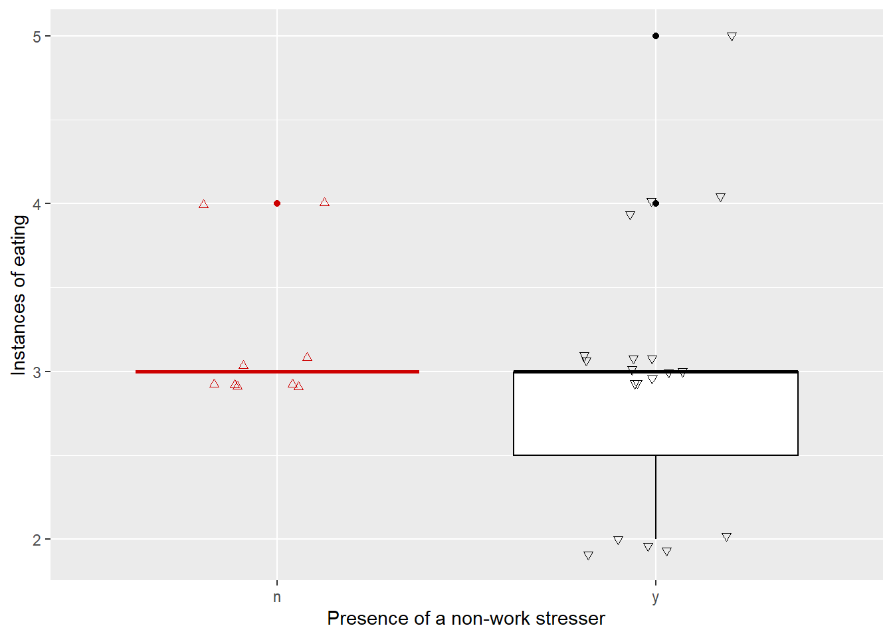

I could make side-by-side box and whisker plots comparing the number of times I ate on days where there is and isn’t a non-work stresser. I find that when I’m stressed I tend to work more and spend less time eating so I think the median number of times I ate when stressed will be lower, and I think the range will also be lower since the more stressed I am the overall fewer opportunities I give myself to eat.
b.
setwd(here::here())personal_data <-read.csv("data/personal_data_sheet1.csv") #reading in the personal datadata_clean <- personal_data |>#makes a new object called data_clean which is just the data from personal_dataclean_names() #cleans the dataggplot(data_clean,aes(x = presence_of_a_non_work_stressor_y_n,y = instances_of_eating,color = presence_of_a_non_work_stressor_y_n, #setting axes and letting me manually choose the color and shapesshape = presence_of_a_non_work_stressor_y_n)) +geom_boxplot(show.legend =FALSE) +#boxplotgeom_jitter(height =0.1, width =0.2, show.legend =FALSE) +#jitterplotscale_color_manual(values =c("y"="black", "n"="red3")) +#custom colorsscale_shape_manual(values =c("y"=6, "n"=2)) +#custom shapeslabs (x ="Presence of a non-work stresser", y ="Instances of eating") #axis labels

c.
Figure 1: Number of times I eat on days I have a non-work stresser and days I don’t:
Comparison of number of times I eat on days I’m stressed for a reason unrelated to work (n = 19) and days where I’m not (n = 9) The boxplots represent median values, IQR, and spread of observations of number of times I ate food those days. Colors represent the location (black = stressor present, red = no stressor). The triangles represent individual observations.
d.
personal_summary <- data_clean |>group_by(presence_of_a_non_work_stressor_y_n) |>summarise(median =median(instances_of_eating), #calculating the followingn =length(instances_of_eating),IQR =IQR(instances_of_eating),min =min(instances_of_eating),max =max(instances_of_eating),.groups ="drop" ) |>rename("non-work stressor?"= presence_of_a_non_work_stressor_y_n) |>#renaming the titles flextable() |>#make a flextable set_table_properties(layout ="autofit")personal_summary #output the flextable
non-work stressor?
median
n
IQR
min
max
n
3
9
0.0
3
4
y
3
19
0.5
2
5
Problem 2
a.
I think an affective visualization for my personal data could be a a photo or sculpture type thing where food or food wrappers are used as the individual data points for a jitterplot, and then using food boxes and things like uncooked pasta to make the outline for the boxplots. I could use foods of generally lighter colors on a lighter background for the non-stressed side, and then food that’s generally darker for the stressed side, just to give a visual indication of the difference. I just need to experiment a little bit to find a good way of distinguishing the stressed side from the non-stressed side, and a specific way of showing outliers as distinct from the jitter data points
b.
sketch <-image_read("../sketch_image.jpeg") #find the photosketch_scaled <-image_scale(sketch, "800") #scale itprint(sketch_scaled) #print it
# A tibble: 1 × 7
format width height colorspace matte filesize density
<chr> <int> <int> <chr> <lgl> <int> <chr>
1 JPEG 800 1135 sRGB FALSE 0 72x72
c.
draft <-image_read("../WhatsApp Image 2025-05-28 at 9.01.04 PM.jpeg") #loading in the photodraft_scaled <-image_scale(draft, "800") #scaling the photoprint(draft_scaled) #print photo
# A tibble: 1 × 7
format width height colorspace matte filesize density
<chr> <int> <int> <chr> <lgl> <int> <chr>
1 JPEG 800 871 sRGB FALSE 0 72x72
d.
My pieces is showing the boxplot and underlying data (as a jitterplot) of the number of times I eat a day on days when I have a non-work-related stresser compared to days where I don’t. I though since each data point is showing a time that I ate, it would be cool to use food as the data points since it means each data point is represented by the thing it literally represents. The shaded side is supposed to represent the stressed side, while the lighter side is the one without stress, although I think I could make it a bit clearer (also the pink ramen packets are the boxplot outliers, which I want to try and make clearer too). I had no specific artist who inspired me, I was just trying to think of a cool way of representing my data that was relevant to the specific question I was trying to answer. The work itself is made all from food inside my dorm that I personally own (except for the ramen packets which are outliers, both in the sense that I don’t own them and the fact that they show boxplot outliers), and the boxplot parts are made out of cardboard and spaghetti. The spaghetti is the whiskers of the boxplot and the cardboard is the main part, since the data is discrete and pretty clustered around specific values it doesn’t really look like a box and whisker plot but it is. I made this by carefully referencing the boxplots I made earlier in this document and by collecting as much variety of food as I could before setting it outside on the patio and arrainging it according to the aforementioned boxplots. I then used an extension cord to bring my lamp close to the food and angled it so the light was aimed mostly at one side and the shadow was on the stressed side, and then I took the photo from as high as I could while still holding the lamp steady.
Problem 3
a.
The statistical test used was a Student’s t-test. The response predictor variable was aspen location (Riparian vs. upland) and the response variable was current annual growth (of the aspen).
# A tibble: 1 × 7
format width height colorspace matte filesize density
<chr> <int> <int> <chr> <lgl> <int> <chr>
1 PNG 442 239 sRGB TRUE 72119 38x38
This is the image I included in homework 2, which wasn’t exactly the data visualization of the statistical test, but I’ll critique it for visual clarity since otherwise I would just have to find another figure anyway.
The authors did a pretty good job of responding their data. The x- and y-axis are properly labeled, the 4 trends are visually distinct and intuitively labeled in the legend, and there’s a title. The predictions are visually distinct (dotted line) and the data points are provided. Also units were provided where necessary.
c.
I think the authors did a pretty good job in regards to visual clutter, the actual data points are the only color on the whole chart (except the legend) which draws your eyes towards it. The essential items are included and the data points are made distinct without going overboard, and the legend is a grid to improve efficiency of space. On the whole there’s not that much data on this chart, but I don’t think you could remove much more without getting rid of important elements.
d.
I would recommend they use box and whisker plots with underlying jitterplots to represent the data. The x-axis would be site type, and have “riparian” and “upland” as options. The y-axis would be the current annual growth rate in cm/year. For both site types there would be a box and whisker plot showing the range, IQR, median, and outliers of the data for that site, plus a jitterplot (with height = 0) showing the actual data points themselves. The plot should have colors that are quite distinct from each other, and unique shapes should be chosen for the jitterplots. Horizontal gridlines should be included to make it easier to read the jitterplots. This would allow someone to easily at a glance see the differences in the growth rates between the sites using the boxplots, which would also help them see the range and general spread of the data. The jitterplot would let people still see the underlying data for more robustness.